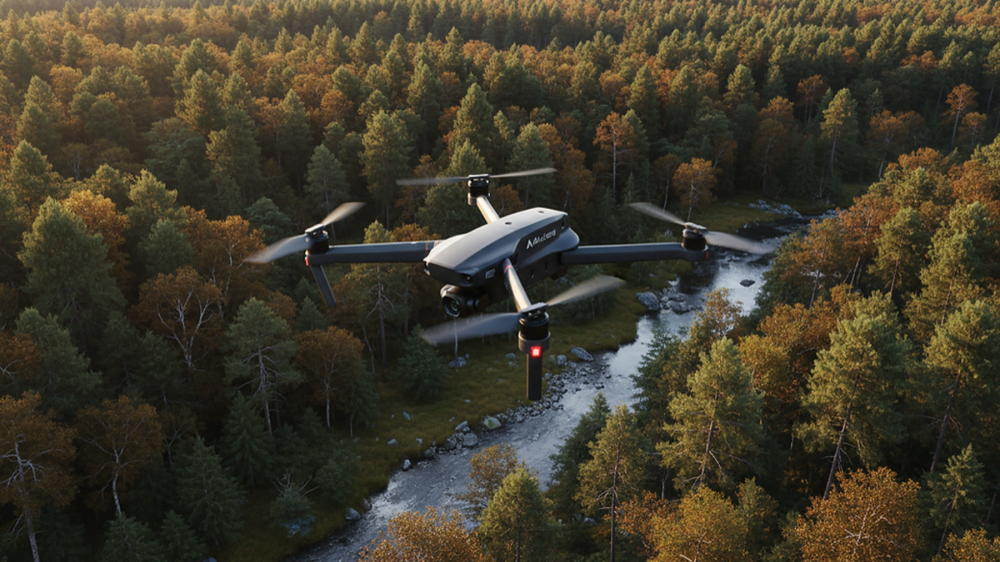
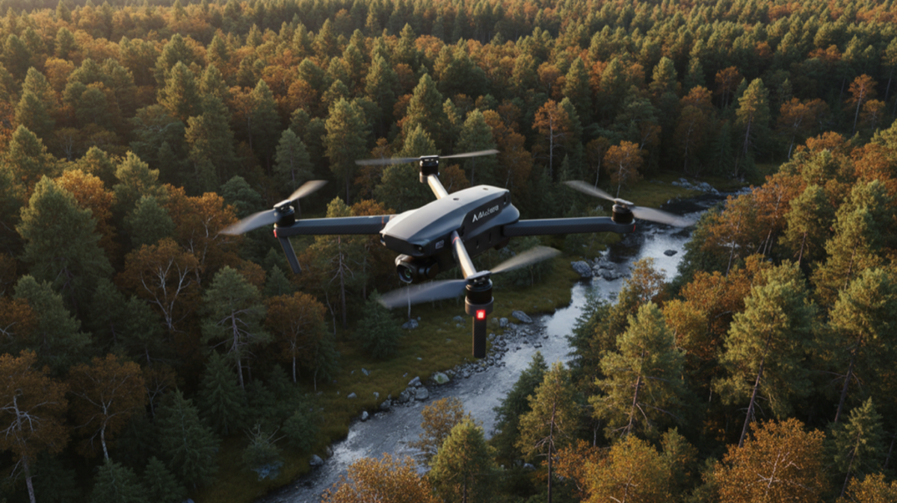

Enhance Your Visuals with Aerial Photography Techniques
When I first started exploring photography, I quickly realized that capturing unique perspectives is what truly makes an image stand out. That’s where aerial photography techniques come into play.

When I first started exploring photography, I quickly realized that capturing unique perspectives is what truly makes an image stand out. That’s where aerial photography techniques come into play. Using drones to capture stunning visuals from above has transformed the way I approach photography and videography. It’s not just about getting a bird’s-eye view; it’s about enhancing your visuals with creativity, precision, and a fresh perspective.
Whether you’re a hobbyist or a professional, incorporating aerial shots can elevate your work to new heights. In this post, I’ll share practical tips and insights on how to enhance your visuals with drone photography, focusing on techniques that are easy to apply and deliver impressive results.
Mastering Aerial Photography Techniques for Stunning Shots
Aerial photography techniques are essential to get the most out of your drone. The key is to understand how to use your drone’s capabilities to capture compelling images and videos. Here are some techniques I rely on:
- Plan Your Flight Path: Before taking off, map out your route. This helps you anticipate the best angles and lighting conditions.
- Use the Rule of Thirds: Just like traditional photography, framing your shot using the rule of thirds creates balanced and engaging images.
- Experiment with Altitude: Don’t just hover at one height. Vary your altitude to capture different perspectives, from sweeping landscapes to detailed close-ups.
- Incorporate Movement: Smooth, controlled drone movements like slow pans or tracking shots add cinematic quality to your videos.
- Mind the Light: Early morning or late afternoon light offers soft, warm tones that enhance your visuals. Avoid harsh midday sun when possible.
By applying these aerial photography techniques, you’ll notice a significant improvement in the quality and impact of your shots.

Essential Gear and Settings for Aerial Photography
Having the right gear and knowing how to adjust your drone’s settings can make a huge difference. Here’s what I recommend:
- Camera Settings: Shoot in RAW format for maximum editing flexibility. Use a low ISO to reduce noise and a fast shutter speed to avoid motion blur.
- Gimbal Stabilization: Ensure your drone’s gimbal is properly calibrated. This keeps your shots steady and smooth.
- Filters: Neutral density (ND) filters help control exposure, especially in bright conditions, allowing for more creative control.
- Battery Management: Always carry extra batteries and monitor flight time closely to avoid losing power mid-flight.
- Safety Checks: Check weather conditions and local regulations before flying. Safety is paramount.
These practical tips will help you capture crisp, vibrant images and videos that truly enhance your visuals.
Creative Composition Ideas to Elevate Your Shots
Composition is where your creativity shines. Here are some ideas to inspire your next drone session:
- Leading Lines: Use roads, rivers, or pathways to draw the viewer’s eye through the image.
- Symmetry and Patterns: Look for natural or man-made patterns that create visual harmony.
- Contrast and Color: Capture scenes with contrasting colors or textures to add depth.
- Frame Within a Frame: Use natural elements like trees or buildings to frame your subject.
- Scale and Perspective: Include objects like people or cars to give a sense of scale and emphasize the vastness of the scene.
Try mixing these ideas with your aerial photography techniques to create images that tell a story and captivate your audience.
How to Edit Your Aerial Photos for Maximum Impact
Editing is the final step to enhance your visuals. Here’s how I approach it:
- Start with Basic Adjustments: Correct exposure, contrast, and white balance to get a natural look.
- Enhance Colors: Boost vibrancy and saturation carefully to make colors pop without looking artificial.
- Sharpen Details: Use sharpening tools to bring out textures and fine details.
- Crop and Straighten: Adjust framing to improve composition and remove distractions.
- Use Presets or Filters: Apply subtle presets to maintain consistency across your portfolio.
Editing software like Adobe Lightroom or Capture One offers powerful tools tailored for aerial photography. Remember, the goal is to enhance your images while keeping them authentic and true to the scene.
Unlock New Perspectives with Drone Photography and Videography
Incorporating drone photography and videography into your creative toolkit opens up endless possibilities. It allows you to capture breathtaking landscapes, dynamic events, and unique architectural shots that were once difficult or impossible to achieve. With practice and patience, you’ll develop your own style and techniques that set your work apart.
If you’re ready to take your visuals to the next level, investing time in learning drone operation, mastering aerial photography techniques, and refining your editing skills will pay off. The sky is literally the limit when it comes to creativity and innovation.
Taking Your Visuals Beyond the Ordinary
Enhancing your visuals with aerial photography is about more than just technology. It’s about seeing the world from a new angle and sharing that vision with others. Whether you’re capturing the beauty of nature, the energy of a city, or the details of a special event, drones give you the power to tell stories in a fresh and exciting way.
Keep experimenting, stay curious, and don’t be afraid to push boundaries. With the right approach, your aerial shots will not only impress but also inspire. So grab your drone, get out there, and start capturing the extraordinary from above.